Logbook for an electric car
Every kilometre, every kilowatt-hour, every franc.
Voltlog collects the trips and charges of a Porsche Macan Electric from the car, the home wallbox and the charging invoices, and shows what driving electric really uses and costs. On the web and on the iPhone.

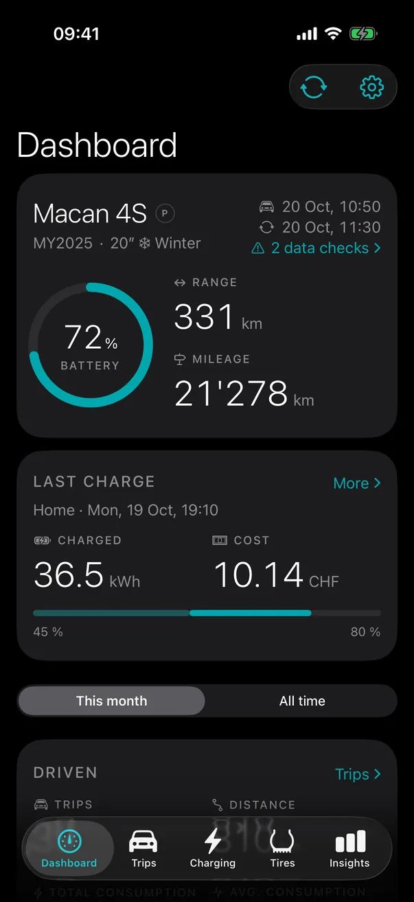
One year of the demo data shown on this page: 810 trips and 104 charges, made up for these screenshots.
Trips
Each trip with its cost and its weather
Every trip from the car, priced at what the energy in the battery cost when it was driven: the charges feed a running average, so a trip after a cheap home charge costs less than one after a fast charger on the motorway.
- Distance, energy, consumption, driving time and average speed
- Electricity cost, cost per km and what a petrol car would have cost
- The weather where it started, from home or a saved location
- Edit any value, add a note; edits survive the next sync
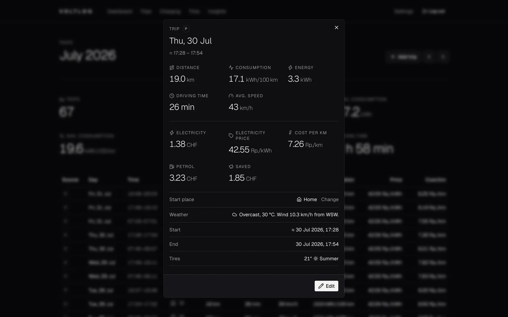
Charging
All charging in one list
Home charging comes from the Zaptec wallbox, public charging from the invoices and receipts of the charging provider, and the car adds what reached the battery. When two sources saw the same charge, Voltlog shows it once and measures the loss between the grid and the battery.
- Import invoices and receipts as PDF (Porsche Charging Service, Migros)
- Prices with the day they apply from: a new tariff leaves the past as it was
- Charging loss for AC and DC, measured on your own charges
- Estimates for charges the car did not report, clearly marked
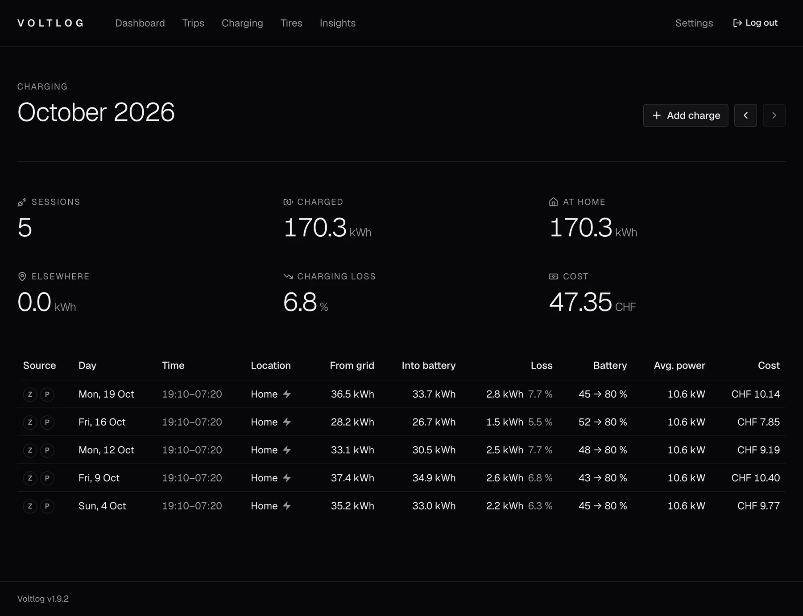
Insights
What really drives consumption
Charts over the last twelve months or all data: when and how far you drive, consumption by speed, trip length and outside temperature, energy and cost per month, battery levels when charging, and the peak power at each DC charge.
- Records: the cheapest, longest, fastest and most efficient trips
- Summer vs. winter tires, per set
- Values above the columns, or hidden with one switch
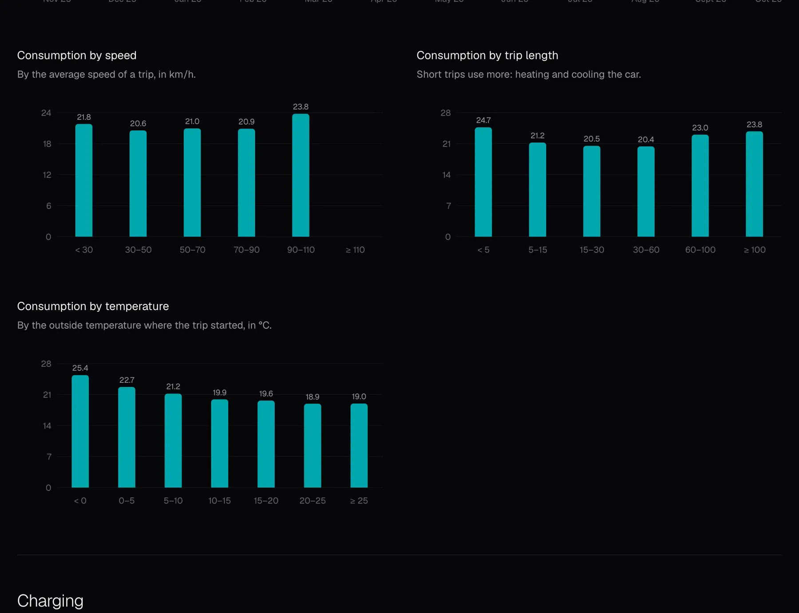
Reports
A month or a year at a glance
The monthly and the yearly report compare a period with the one before, from consumption to the savings against a petrol car, and share as an image that fits a phone screen.
- Consumption per month, driving, costs and charging
- The share charged at home and the longest trip of the year
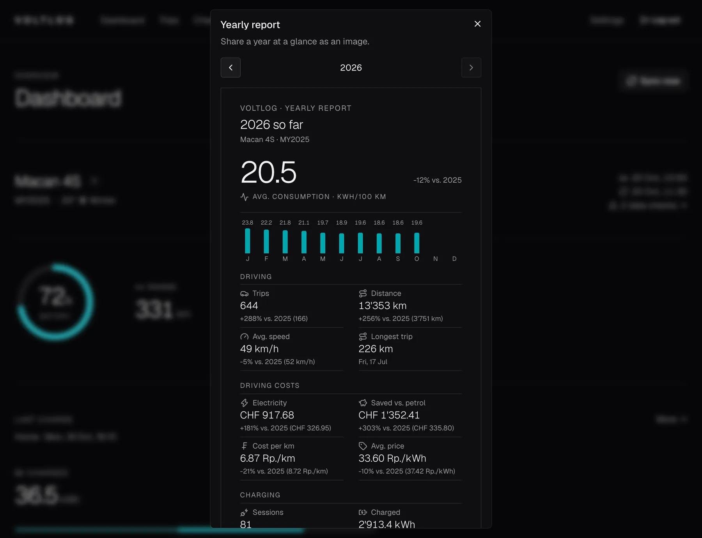
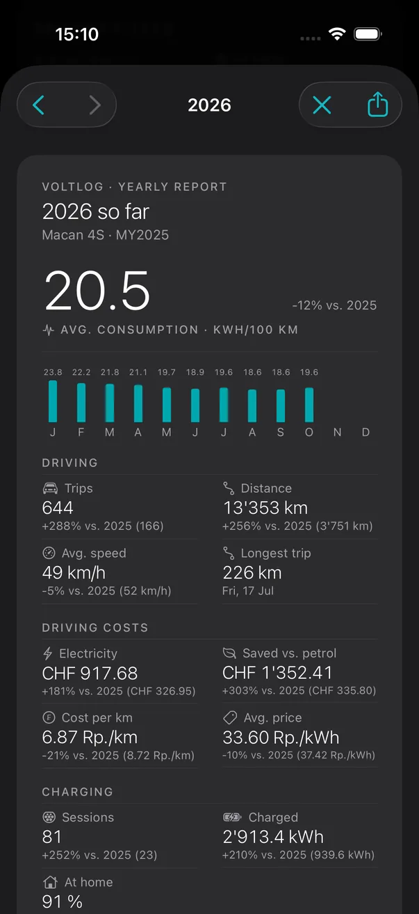
Tires and locations
Which tires, and where trips started
Log your tire swaps and see the mileage and consumption of each set next to the pressures the car reports. Name the places you drive from, like home or a holiday flat, and each trip gets the weather of where it started.
- Summer and winter sets with their sizes and history
- Locations with a short name, one of them home
- Distance and consumption per tire set and per location
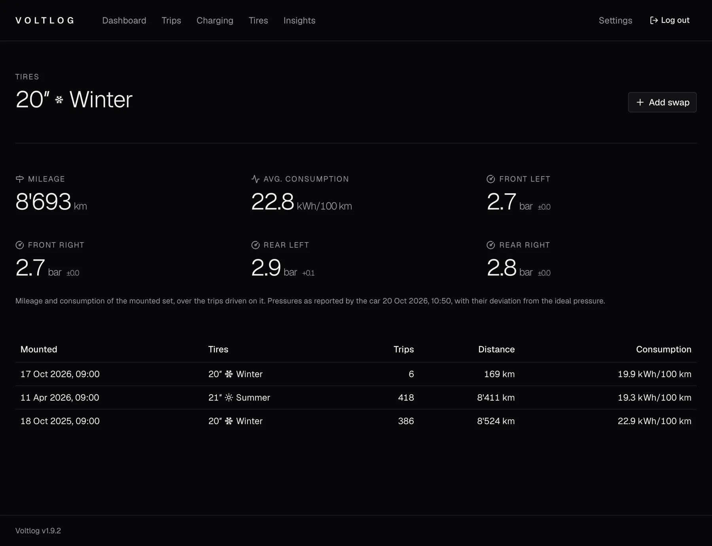
Data checks
Gaps found, fixes suggested
Voltlog checks its own data. When the trips used more energy than the charges explain, it suggests the missing charge where the car stood longest. It also finds trips recorded twice and stays far from home. Nothing changes until you review a suggestion.
- Missing charges from the energy balance between home charges
- Stays away: set the start place for all their trips at once
- A history of what was accepted and dismissed
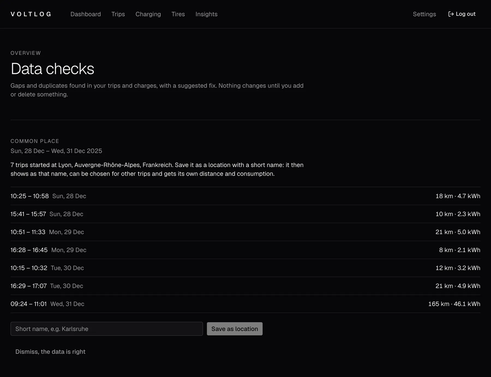
Accent color
In your color
Six accent colors inspired by car paints, chosen per device in Settings: they color the battery ring, the links and the charts, each with a chart pair checked for contrast and colour blindness. On the iPhone the app icon follows.
Teal
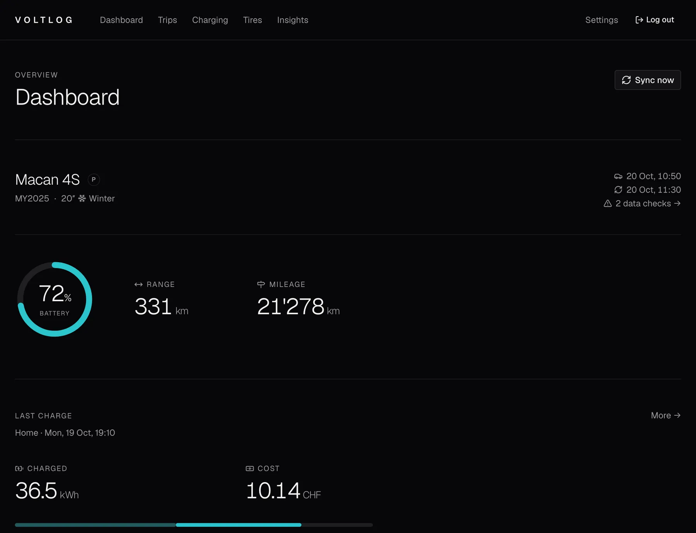
iPhone
Everything, also in your pocket
A native SwiftUI app for iOS 26 with the same features as the web app: sync, trips, charging, insights, reports, tires, locations and settings. Share a PDF invoice from Mail or a trip export from the Porsche app straight to Voltlog.
- Trips of the month
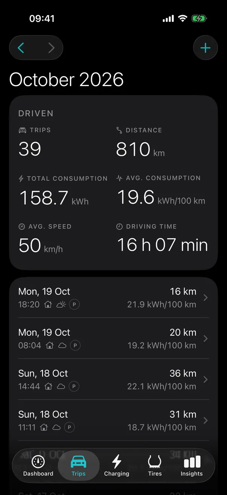
- A trip and its costs
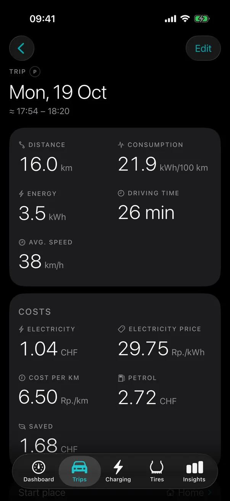
- Records
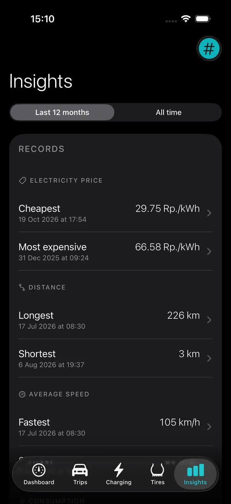
- Charging insights
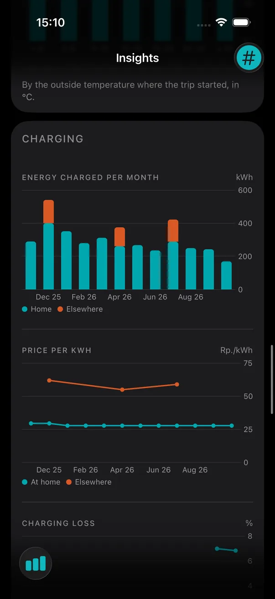
- Tires and pressures
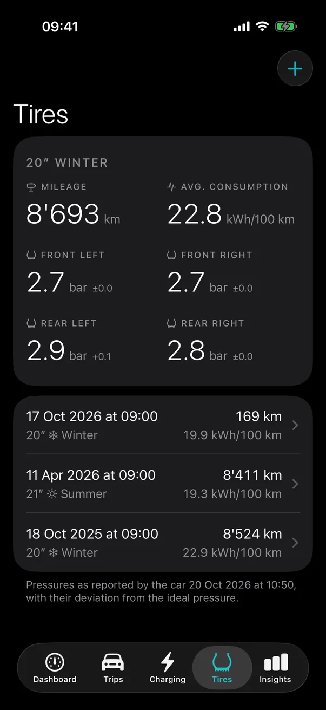
- Locations
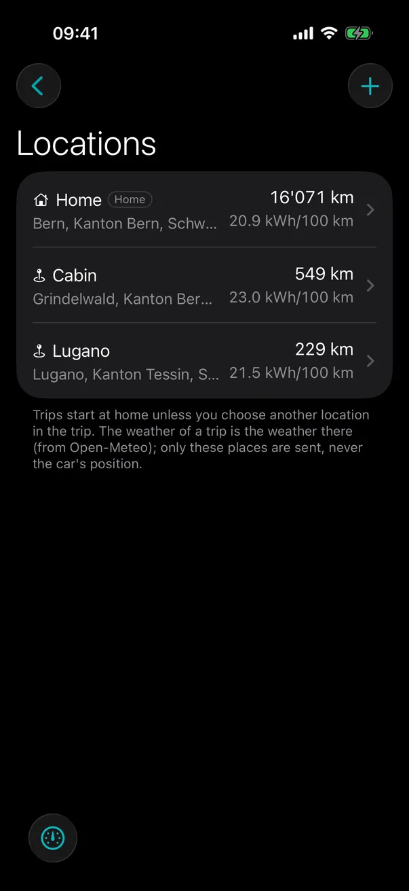
- Data checks
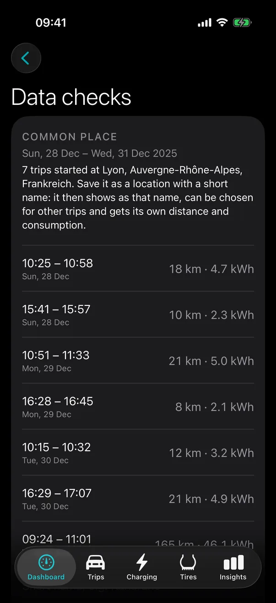
Data sources
Where the numbers come from
- Porsche Connect
- Vehicle status, trips and the car's charging history
- Zaptec
- Charging sessions of the home wallbox
- Invoices and receipts
- PDF imports with what public charging cost
- Trip export
- CSV from My Porsche, for trips older than twelve months
- Open-Meteo
- Hourly weather at your locations
Built with
Small and self-hosted
- Backend
- Python, FastAPI, SQLAlchemy, SQLite
- Web app
- React, TypeScript, Tailwind CSS, Recharts
- iPhone app
- Swift 6, SwiftUI, Swift Charts
- Contract
- One OpenAPI spec; both apps' types are generated from it
- Hosting
- One container on fly.io, deployed by GitHub Actions
Privacy
Your data stays yours
- Single user
- Your own server, behind a login
- No position tracking
- Voltlog never asks the car for its location; places are the ones you name
- Encrypted logins
- Vendor passwords and tokens are stored encrypted
- Manual sync
- Nothing runs in the background; you decide when to sync